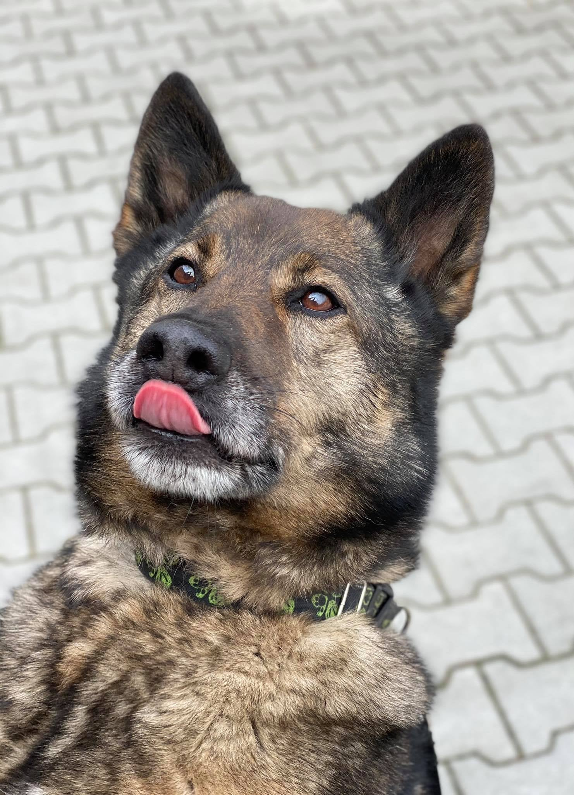

- Nazwa: Sezar
- W typie rasy: Owczarek Niemiecki
- Wiek: 12
- Płeć: Samiec
- Waga: 20kg
- Nr: 0028/21/T
- Status: Do adopcji
- Przyjęty: 2021-06-05
- Znaleziony: Warszawa
Sezar
To psiak w typie owczarka niemieckiego użytkowego. Trafił do nas jakiś czas temu i czasem odnosimy wrażenie, że był psem, który z wiekiem po prostu przestał być potrzebny… Sezar to wspaniały, usłuchany pies,
prawdziwy wilczasty o przyjaznym, łagodnym usposobieniu. Posiada cechy psa zdecydowanego, czasem upartego, który kiedy nie ma ochoty na spacer doskonale to komunikuje Choć Sezar to typ spacerowicza, ponieważ uwielbia długie spacery po lesie i łakomczucha, bo na widok smaków jest potulny jak baranek, choć z tym akurat trzeba uważać bo ma tendencje do szybkiego przybierania na masie Przepięknie umaszczony o grubym, mięciuchnym futrze, które czyni go wyjątkowym niczym wilk 🙂 Do ludzi jest bardzo przyjazny, nadstawia się do głaskania, chętnie współpracuje, a przy tym jest niesamowicie inteligentny bo pięknie potrafi sygnalizować swoje potrzeby. Jak tylko zbliżamy się do boksu, szaleje z radości, mimo łatki wieku jaki mu przypisano ma w sobie jeszcze sporo energii, gdy wraca – najchętniej nie wypuściłby nas, żebyśmy tylko zostali z nim na dłużej.
Data urodzenia: ~2010
Waga: 20kg
Informujemy, że każdego zwierzaka można objąć wirtualną adopcją.
Jeśli jest Pan/Pani zainteresowany/a adopcją tego psa, prosimy o kliknięcie przycisku ADOPTUJ, znajdującego się poniżej oraz wiadomość z odpowiedziami na poniższą ankietę:
0. Imię psa jeśli wybrane
1. Gdzie będzie mieszkał pies? w domu? w bloku? na podwórku? gdzie będzie spał?
2. Jaki jest Państwa stosunek do kastracji zwierząt?
3. Czy są w domu jakieś zwierzęta? jakie? Czy są wykastrowane?
4. Czy były wcześniej w domu zwierzęta? Co się z nimi stało?
5. Czym będzie karmiony pies? (sucha/mokra karma/inne – jakie?) prosimy podać markę karmy!
6. Co z pieskiem w przypadku wyjazdu na wakacje?
7. Czy są w domu dzieci? W jakim wieku?
8. Gdzie będziecie Państwo chodzili z psem do weterynarza?
9. Czy wszyscy domownicy się zgadzają na nowego członka rodziny?
10. Czy nikt nie ma alergii?
11. Czy są Państwo gotowi na wydatki wiążące się ze szczepieniami/odrobaczeniami, leczeniem?
12. Czy zdają sobie Państwo sprawę, że zwierzę będzie na początku załatwiało się w domu? 13. Czy są Państwo świadomi, że zwierzę może niszczyć różne rzeczy w domu?
14. Czy znają Państwo termin – â€lęk separacyjnyâ€?
15. Czy są Państwo świadomi, że zwierzę ze schroniska mimo odrobaczeń i kontroli lekarskich może mieć pasożyty i może wystąpić konieczność dalszego leczenia oraz odrobaczania?
16. Czy są Państwo gotowi na wydatki związane z wyprawką dla psa?
17. Czy są Państwo w stanie kupić wskazaną przez schronisko karmę?
18. Punkt dotyczy szczeniąt – czy są Państwo świadomi, że szczenię ze schroniska może być chore na parwowirozę(wysoce śmiertelna choroba zakaźna, początkowo może być bezobjawowa)? Informujemy, że wypełnienie ankiety nie jest jednoznaczne z rezerwacją zwierzęcia. Chęć rezerwacji można wyrazić po pozytywnie wypełnionej ankiecie – trzeba poprosić o dokonanie rezerwacji, jeśli ktoś jest zdecydowany w 100% na zabranie zwierzęcia.
Data urodzenia: ~2010
Waga: 20kg
Informujemy, że każdego zwierzaka można objąć wirtualną adopcją.
Jeśli jest Pan/Pani zainteresowany/a adopcją tego psa, prosimy o kliknięcie przycisku ADOPTUJ, znajdującego się poniżej oraz wiadomość z odpowiedziami na poniższą ankietę:
0. Imię psa jeśli wybrane
1. Gdzie będzie mieszkał pies? w domu? w bloku? na podwórku? gdzie będzie spał?
2. Jaki jest Państwa stosunek do kastracji zwierząt?
3. Czy są w domu jakieś zwierzęta? jakie? Czy są wykastrowane?
4. Czy były wcześniej w domu zwierzęta? Co się z nimi stało?
5. Czym będzie karmiony pies? (sucha/mokra karma/inne – jakie?) prosimy podać markę karmy!
6. Co z pieskiem w przypadku wyjazdu na wakacje?
7. Czy są w domu dzieci? W jakim wieku?
8. Gdzie będziecie Państwo chodzili z psem do weterynarza?
9. Czy wszyscy domownicy się zgadzają na nowego członka rodziny?
10. Czy nikt nie ma alergii?
11. Czy są Państwo gotowi na wydatki wiążące się ze szczepieniami/odrobaczeniami, leczeniem?
12. Czy zdają sobie Państwo sprawę, że zwierzę będzie na początku załatwiało się w domu? 13. Czy są Państwo świadomi, że zwierzę może niszczyć różne rzeczy w domu?
14. Czy znają Państwo termin – â€lęk separacyjnyâ€?
15. Czy są Państwo świadomi, że zwierzę ze schroniska mimo odrobaczeń i kontroli lekarskich może mieć pasożyty i może wystąpić konieczność dalszego leczenia oraz odrobaczania?
16. Czy są Państwo gotowi na wydatki związane z wyprawką dla psa?
17. Czy są Państwo w stanie kupić wskazaną przez schronisko karmę?
18. Punkt dotyczy szczeniąt – czy są Państwo świadomi, że szczenię ze schroniska może być chore na parwowirozę(wysoce śmiertelna choroba zakaźna, początkowo może być bezobjawowa)? Informujemy, że wypełnienie ankiety nie jest jednoznaczne z rezerwacją zwierzęcia. Chęć rezerwacji można wyrazić po pozytywnie wypełnionej ankiecie – trzeba poprosić o dokonanie rezerwacji, jeśli ktoś jest zdecydowany w 100% na zabranie zwierzęcia.